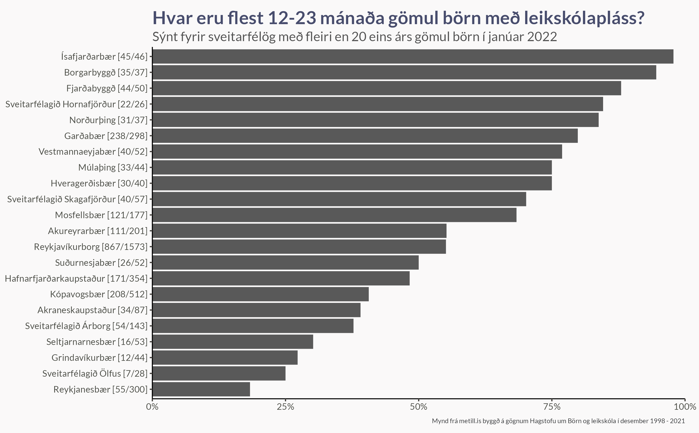
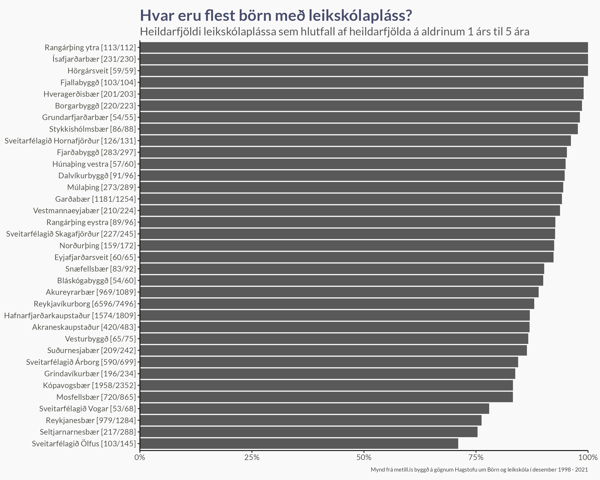

Hvernig gengur sveitarfélögum landsins að brúa bilið?
Hvernig gengur sveitarfélögum að útbúa leikskólapláss? Hvernig ber fjölda nemenda í leikskólum saman við heildarfjölda barna í hverjum árgangi? Hér skoðum við gögn Hagstofunnar um leikskóla og berum saman við mannfjöldatölur eftir aldri.
Hagstofan gefur árlega út gögn um fjölda nemenda í leikskólum landsins. Tölurnar eiga við um fjöldann í desembermánuði árið á undan. Til að fá sem raunsæsta mynd á hlutfall barna með leikskólapláss er best að bera þann fjölda saman við stærð árgangsins í janúar mánuði síðar.
Eins árs gömul börn
Code
p <- d |>filter( aldur =="1 árs", ar ==2021, n_heild >20 ) |>mutate(hlutf = n_leik / n_heild,name =str_c( sveitarfelag, " [", n_leik, "/", n_heild, "]" ),name =fct_reorder(name, hlutf) ) |>ggplot(aes(hlutf, name)) +geom_col() +scale_x_continuous(limits =c(0, 1),expand =expansion(),labels =label_percent() ) +coord_cartesian(clip ="off") +theme(plot.margin =margin(t =5, r =15, b =5, l =5) ) +labs(x =NULL,y =NULL,title ="Hvar eru flest 12-23 mánaða gömul börn með leikskólapláss?",subtitle ="Sýnt fyrir sveitarfélög með fleiri en 20 eins árs gömul börn í janúar 2022",caption ="Mynd frá metill.is byggð á gögnum Hagstofu um Börn og leikskóla í desember 1998 - 2021" )ggsave(plot = p,filename ="Figures/ordered_2021.png",width =8, height =0.621*8, scale =1.3)ggsave(plot = p +theme(plot.background =element_blank(),panel.background =element_blank()),filename ="Figures/ordered_2021_fp.png",width =8, height =0.621*8, scale =1.3)
Mest er talað um fjölda eins árs barna svo við byrjum á að skoða þær tölur

Code
plot_dat <- d |>filter( aldur =="1 árs", ) |>semi_join( d |>filter(aldur =="1 árs") |>group_by(sveitarfelag) |>summarise(n_leik =mean(n_leik)) |>ungroup() |>top_n(16, wt = n_leik),by ="sveitarfelag" ) |>mutate(n_leik =pmin(n_leik, n_heild),hlutf = n_leik / n_heild,hlutf =pmin(1, hlutf),hlutf =pmax(0, hlutf)) |>group_by(sveitarfelag) |>group_modify(function(x, ...) {gam(hlutf ~s(ar), data = x, family =binomial(), weight = n_heild) |>emmeans(~ ar, at =list(ar =unique(x$ar))) |>tidy(type ="response") |>mutate(n_leik = x$n_leik,n_heild = x$n_heild,hlutf = n_leik / n_heild) } ) |>ungroup()p <- plot_dat |>ggplot(aes(ar, prob)) +geom_line(data = plot_dat |>rename(svf = sveitarfelag),aes(group = svf),alpha =0.2 ) +geom_line() +geom_point(aes(y = hlutf), size =1) +scale_x_continuous(expand =expansion(add =0.2) ) +scale_y_continuous(labels =label_percent(),expand =expansion() ) +facet_wrap("sveitarfelag") +coord_cartesian(clip ="off") +labs(x =NULL,y =NULL,title ="Hlutfall barna á aldrinum 12 - 23 mánaða með leikskólapláss",subtitle ="Hlutfall reiknað sem fjöldi barna með leikskólapláss í desember deilt með fjölda í árgangi mánuði seinna",caption ="Mynd frá metill.is byggð á gögnum Hagstofu um Börn og leikskóla í desember 1998 - 2021" )ggsave(plot = p,filename ="Figures/hlutf_1ars.png",width =8, height =0.621*8, scale =1.5)
En hvernig hefur þetta hlutfall þróast undanfarin ár? Skoðum þróunina hjá þeim 16 sveitarfélögum sem hafa haft stærstu árgangana síðustu árin
Heildarfjöldi leikskólaplássa
Endurtökum þetta nú fyrir leikskólana í heild sinni. Þá skoðum við heildarfjölda nemenda í leikskólum sem hlutfall af fjölda barna á aldrinum 1 árs til 5 ára. Við sjáum að neðan að stundum benda gögnin til þess að fleiri börn eru í leikskólum heldur en eru í árganginum. Þetta getur alltaf gerst þar sem við erum að skoða fjöldatölur í árgangi mánuði seinna en fjöldatölur í leikskólum.
Code
p <- d |>filter( ar ==2021, aldur !="Á fyrsta ári" ) |>group_by(sveitarfelag) |>summarise(n_leik =sum(n_leik),n_heild =sum(n_heild),.groups ="drop" ) |>top_n(35, wt = n_heild) |>mutate(hlutf = n_leik / n_heild,hlutf =pmin(1, hlutf),name =str_c( sveitarfelag, " [", n_leik, "/", n_heild, "]" ),name =fct_reorder(name, hlutf) ) |>ggplot(aes(hlutf, name)) +geom_col() +scale_x_continuous(limits =c(0, 1),expand =expansion(),labels =label_percent() ) +coord_cartesian(clip ="off") +theme(plot.margin =margin(t =5, r =15, b =5, l =5) ) +labs(x =NULL,y =NULL,title ="Hvar eru flest börn með leikskólapláss?",subtitle ="Heildarfjöldi leikskólaplássa sem hlutfall af heildarfjölda á aldrinum 1 árs til 5 ára",caption ="Mynd frá metill.is byggð á gögnum Hagstofu um Börn og leikskóla í desember 1998 - 2021" )ggsave(plot = p,filename ="Figures/ordered_total_2021.png",width =8, height =0.8*8, scale =1.3)ggsave(plot = p +theme(plot.background =element_blank(),panel.background =element_blank()),filename ="Figures/ordered_total_2021_fp.png",width =8, height =0.621*8, scale =1.3)

Code
plot_dat <- d |>filter(aldur !="Á fyrsta ári") |>semi_join( d |>filter(aldur =="1 árs") |>group_by(sveitarfelag) |>summarise(n_leik =mean(n_leik)) |>ungroup() |>top_n(16, wt = n_leik),by ="sveitarfelag" ) |>group_by(sveitarfelag, ar) |>summarise(n_leik =sum(n_leik),n_heild =sum(n_heild),.groups ="drop" ) |>mutate(n_leik =pmin(n_leik, n_heild),hlutf = n_leik / n_heild,hlutf =pmin(1, hlutf),hlutf =pmax(0, hlutf)) |>group_by(sveitarfelag) |>group_modify(function(x, ...) {gam(hlutf ~s(ar), data = x, family =binomial(), weight = n_heild) |>emmeans(~ ar, at =list(ar =unique(x$ar))) |>tidy(type ="response") |>mutate(n_leik = x$n_leik,n_heild = x$n_heild,hlutf = n_leik / n_heild) } ) |>ungroup()p <- plot_dat |>ggplot(aes(ar, prob)) +geom_line(data = plot_dat |>rename(svf = sveitarfelag),aes(group = svf),alpha =0.2 ) +geom_line() +geom_point(aes(y = hlutf), size =1) +scale_x_continuous(expand =expansion(add =0.2) ) +scale_y_continuous(labels =label_percent(),expand =expansion() ) +facet_wrap("sveitarfelag") +coord_cartesian(clip ="on", ylim =c(0.4, 1)) +labs(x =NULL,y =NULL,title ="Hlutfall barna með leikskólapláss",subtitle ="Hlutfall reiknað sem fjöldi barna með leikskólapláss í desember deilt með fjölda í árgangi mánuði seinna",caption ="Mynd frá metill.is byggð á gögnum Hagstofu um Börn og leikskóla í desember 1998 - 2021" )ggsave(plot = p,filename ="Figures/hlutf_total.png",width =8, height =0.621*8, scale =1.5)
Skoðum þróunina núna fyrir sömu 16 sveitarfélög og að ofan.